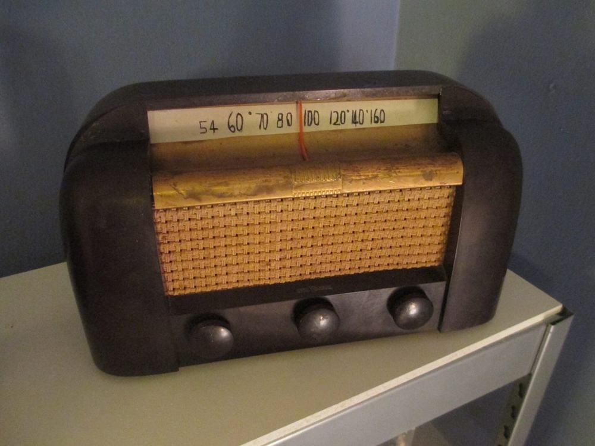
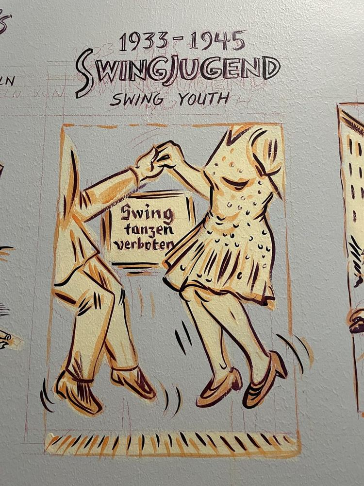

故事
有個國家禁止爵士，卻自己組了一支爵士樂團。二戰時的納粹德國，把爵士罵成墮落的音樂。電台不准播，喜歡搖擺樂的年輕人還可能被抓。
可是宣傳部發現，英國和美國的士兵都愛聽搖擺樂。於是他們組了一支樂團，叫 Charlie and His Orchestra。曲子是美國流行金曲，歌詞卻被改成宣傳內容。

節目用英語，對著英國和美國廣播。前面幾句跟原曲一樣，聽到一半，才發現歌詞不對。這些錄音戰後被保存下來，成了研究宣傳的史料。下次聽到搖擺樂，想想它曾經被拿來當成廣播裡的武器。
故事後面
納粹德國把爵士視為「墮落」的音樂，但禁令很難完全落實，年輕人私下聽唱片、跳搖擺舞。
宣傳部組的 Charlie and His Orchestra 用英語演唱改過詞的美國流行歌，透過短波廣播對英國和美國播送。
這段歷史提醒我們：音樂不只是娛樂，也曾經被當成宣傳工具。

這樣聽
聽這種鼓聲帶頭的搖擺節奏，想想當年在德國偷偷聽它、跟著跳舞的年輕人。
逐句英文
One country banned jazz, then formed its own jazz band.
Nazi Germany denounced jazz as degenerate music.
It was kept off the radio, and young swing fans could be arrested.
But the propaganda ministry noticed that British and American soldiers loved swing.
So they formed a band called Charlie and His Orchestra.
The tunes were American hits, but the lyrics were rewritten as propaganda.
The broadcasts were in English, aimed at Britain and America.
The first lines matched the original; halfway through, listeners realized the words had changed.
The recordings survived the war and became source material for studying propaganda.
Next time you hear swing, remember it was once used as a weapon on the radio.
查證筆記與出處
Gemini 稿說它「成了德國技巧最好的爵士團」，查不到依據，已刪。「年輕人可能被抓」指 Swingjugend，不寫後續處置細節。
https://en.wikipedia.org/wiki/Charlie_and_His_Orchestra
https://en.wikipedia.org/wiki/Swingjugend
一分鐘影片版在 Instagram @jazz101tw。